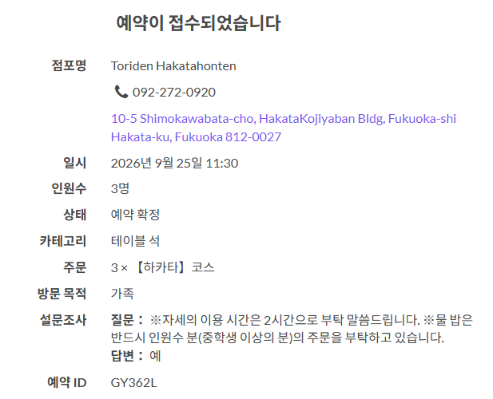

09:55 · 10:15
공항 → 하카타역
국제선 입국 후 합류.
택시로 하카타역 약 15분.
하카타역
26일 유후인 열차표 발권
지정석 매표기 또는 창구. CHA 본인 카드 + 인증 0506.
가는 편 63231 · 오는 편 60832
26일 07:43 유후 1 / 17:17 유후인노모리. 티켓정보
11:30
점심식사
후쿠오카 미즈타키 유명 맛집. 코우지 강추.
하카타 코스 × 3 · 테이블 석 · 예약 확정
福岡市博多区下川端町10-5 博多小路やばんビル
092-272-0920 · 이용 약 2시간
- 인원
- 3명 · 가족
- 예약 ID
- GY362L

점심 후
커피 후보
도보로 산책겸 이동. 아케이드 · 나카스강 경유.
18:00